About Me
Basic Information
- Name: Agus Budi Raharjo
- Age: < 30 years old
- Address: Marseille, France
- Nationality: Indonesian
- Linguistic: Bahasa (native), Javanese (native),
English (professional), French (professional)
Research Profile
My research lies on the field of data mining, especially machine learning. I am working on new methods related to the reliability of supervised and unsupervised learning. I am particularly interested in the classification of annotator and probabilistic modeling. Currently, I'm working on the problem of classification and crowdsourcing.
Ask My CVMy Interests
-
Learn & Share
Learning and Sharing together with my students in Aix-Marseille University, France and Institut Teknologi Sepuluh Nopember, Indonesia.
-
Research & Innovation
Applying research findings into innovation projects and startup company.
-
Travel & Adventure
Curious to learn the culture around
the world and enjoying the nature -
Lego & Plastic Model
Adult Fan of Lego (AFOL) and Gundam builder.
Skill
Programming Skills
Web Programming: ASP.NET, PHP, HTML, NodeJS, AngularJS, Ionic
Database Management: Oracle, MySQL, SQL Server, MongoDB
Library: Weka data mining, Scikit-learn
Operating System: Windows, Linux, MacOS
Administration & Development Tools: Microsoft & Libre Office, Power Designer, StarUML, GIT
Graphic Tools: Adobe Photoshop, Google Sketchup, Corel Draw, PowerDirector
Publications
Regional & International
Co-founder of Startup
PT. Profio Teknova Indonesia
Awards and Research Grants
.
years of Work Experience
.
Experience
-
Attaché Temporaire d'Enseignement et de Recherche
Polytech Informatique, Aix-Marseille Université
Sept, 2018 - Aug, 2019Lecturer/Assistant Lecturer for the course: Imperative Programming, Database Management, Web and Mobile Application, Probability and Statistic, Machine Learning, Data Analytics, Algorithmic and Project.
-
Attaché Temporaire d'Enseignement et de Recherche
Faculté des Sciences, Aix-Marseille Université
Sept, 2017 - Aug, 2018Lecturer/Assistant Lecturer for the course: IT tools, Automata and circuits, Programming I, Programming II, Advanced Programming.
-
Co-founder
PT. Profio Teknova Indonesia
Jul, 2015 - now (inactive during doctoral study)IT consultant for Educational Institution.
-
Researcher and Developer
Information System Development Center, Institut Teknologi Sepuluh Nopember
Aug, 2014 - Aug, 2015Developer and researcher on academic information system quality.
-
Internship
Laboratoire des Sciences de l’Information et des Systèmes (LSIS - UMR CNRS 7296)
March, 2014 - Jun, 2014Topic of internship: Decision Fusion in Multi-Strategy Learning.
-
Part Time Programmer
Information System Development Center, Institut Teknologi Sepuluh Nopember
Aug, 2012 - Jul, 2013the programmer of timetable and infrastructure information system
-
Practical Working
PT. Pertamina
Jul, 2012Practical Working at Indonesian Petrol Company.
Publication
-
Dynamic Reliable Voting in Ensemble Learning
A.B. Raharjo, and M. Quafafou
2019Artificial Intelligence Applications and Innovations, IFIP Advances in Information and Communication Technology, vol 559. Springer: Cham.
-
The Combination of Reliable Predictions in Ensemble Learning
A.B. Raharjo, and M. Quafafou
2018Le 25th conférence de la Société Francophone de Classification, Paris, France.
-
The Combination of Decision in Crowds When the Number of Reliable Annotator Is Scarce
A.B. Raharjo, and M. Quafafou
2017Advances in Intelligent Data Analysis XVI, Springer International Publishing: Cham, pp. 260–271.
-
On Reliability of Majority Voting
A.B. Raharjo, M. Quafafou, and F. Chamroukhi
2017Le 24th conférence de la Société Francophone de Classification, Lyon, France.
-
Academic information system quality measurement using quality instrument: A proposed model
U.L. Yuhana, A.B. Raharjo, and S. Rochimah
2014International Conference on Data and Software Engineering (ICODSE), Bandung, pp. 1-6.
Education & Training
-
Ph.D. Program
Aix-Marseille University
Jan, 2016 – ongoingI am the member of research group DANA (Big Data Analytics) in Laboratoire d’Informatique & Systèmes (LIS) UMR CNRS 7020.
Subject: Reliability in Ensemble Learning and Learning from Crowds.
Supervisor: Prof. Mohamed Quafafou -
International Summer School on Deep Learning
Deusto Rovira i Virgili University
July, 2017International Summer School on Deep Learning, Deusto Rovira i Virgili University, Bilbao, Spain.
-
English Public Speaking Training
International English Services and Training Assets (IESTA)
October, 2016This training allows doctoral researchers to beneficiate from a theoretical approach which will enhance their knowledge of discourse in general and from a considerable amount of time to work on their speech; henceforth, improving their oral skills significantly through various types of speech and their commenting of others.
-
Spring School
Université Bretagne Sud
April, 2016Summer school on Challenging Problems in Statistical Learning, organized by La Société Française de Statistique (SFdS) in Université Bretagne Sud, Vannes, France
-
MATLAB Fundamentals
Aix-Marseille University
March, 2016This course aims to introduce Matlab environment to the participants. Basic concepts will be addressed using examples relevant to the field of sciences.
-
Write a scientific article in English
Aix-Marseille University
February, 2016The objective of these courses is to improve the writing skill of scientific article in English. The students study the general principles of writing a scientific article, and the skills needed to write it in English.
-
Double Degree Master of Computer Science
Institut Teknologi Sepuluh Nopember & Aix-Marseille University
Sept, 2012 – Aug, 2014- Master 1 program: Informatics Engineering, Institut Teknologi Sepuluh Nopember (ITS), Surabaya, Indonesia
- Master 2 program: Sciences de l’Information et des Systèmes, Aix-Marseille University (AMU), Marseille, France.
-
Intensive French Class
Institut Français d'Indonésie - Surabaya
March, 2013 – May, 2013French class preparation to study in France.
-
Fast track Bachelor of Informatics Engineering
Institut Teknologi Sepuluh Nopember
Aug, 2009 – Sept, 2013I was selected as fast track student during college. This program allows the selected students to go through the fourth year of undergraduate program along with the first year of master program.
- ALL
- PROJECT-POLYTECH
- AWARD
- GRANT
- FINAL YEAR PROJECT
-

[Supervisor] Projet 4A: Listen to your email
N. Besse, V. Chantrel
IMAP Java VoiceRSS
-
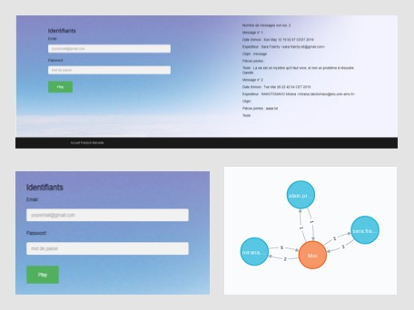
[Supervisor] Projet 4A: Listen to your email
M. Rakotomavo, A. Tucaliuc
IMAP Java VoiceRSS Neo4J
-
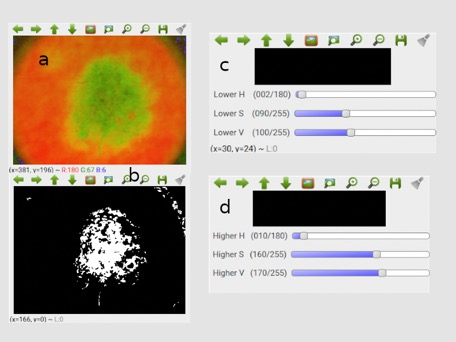
[Supervisor] Projet 4A: détection d’un mélanome à partir d’une image
S. El Majdoubi, W. Hajji
Javascript OpenCV -
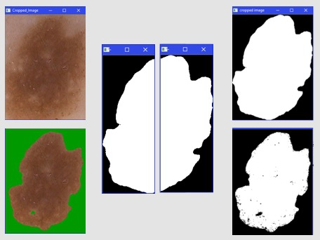
[Supervisor] Projet 4A: Détection du mélanome
TTH. Dinh, TTT. Dang
Python OpenCV -

[Supervisor] Projet 4A: Mobile Application and Brain
T. Puaux, M. Mouret
R Muse Monitor Java Weka -
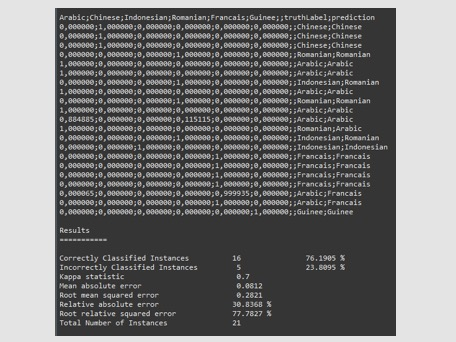
[Supervisor] Projet 4A: Mobile Application and Brain
G. Vartazian, T. Martinez
R Muse Monitor Java Weka -
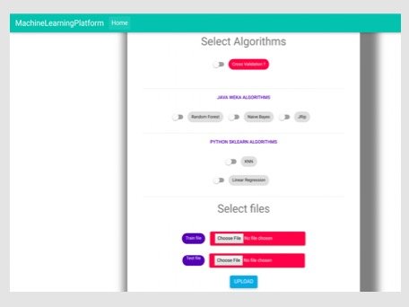
[Supervisor] Projet 4A: Online Platform for Machine Learning
M. Dembele,Z. Daouma,L. N’diaye
Python Sklearn Java Weka Javascript -
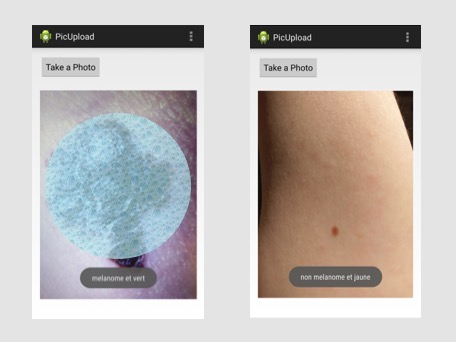
[Co-supervisor] Projet 5A: Data Quality and Machine Learning: Mobile application
A. Amairi, NH. LE
Android Java Weka MongoDB -
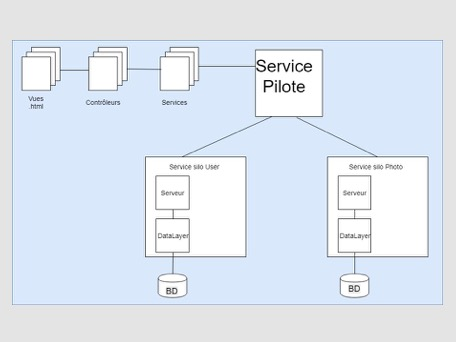
[Co-supervisor] Projet 5A: Data Quality and Machine Learning: Architecture
A. Aït Saïd, P. Franc, D. Gaudard
JEE -
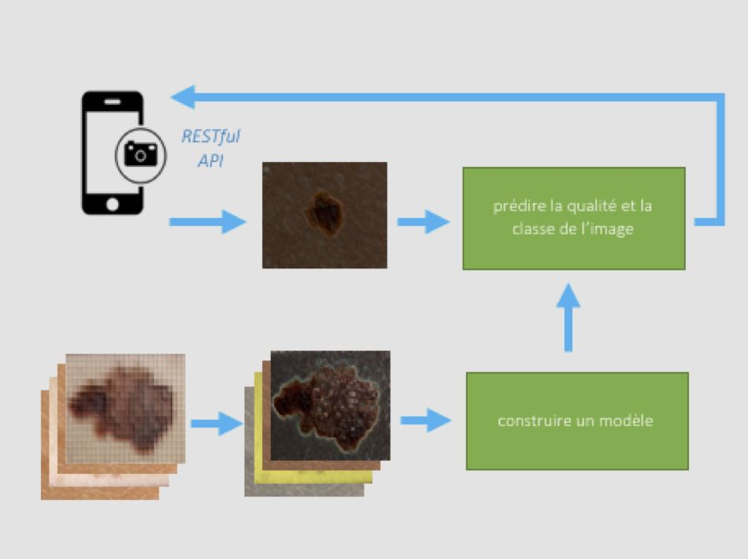
[Co-supervisor] Projet 5A: Data Quality and Machine Learning: Deep Learning
R. Mancini,M. Gautin, V. Mace
Tensorflow Python -
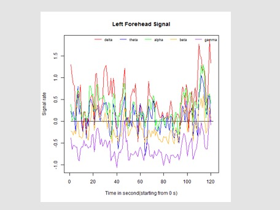
Brainwave sensor processing
AB. Raharjo, M. Quafafou, F. Almuhisen, M. Bendella
R Muse Monitor Java Weka
-
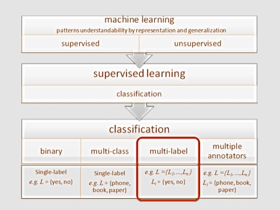
Decision Fusion in Multi-Strategy Learning
AB. Raharjo, M. Quafafou
Weka Java R
-
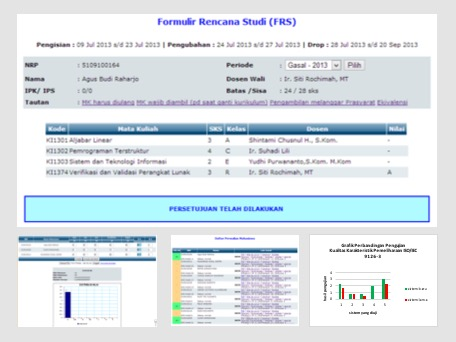
Academic Information System Re-engineering
AB. Raharjo
ASP .NET SQLserver ISO/IEC 9126 -
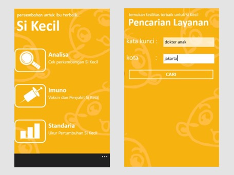
Sikecil: Gold Medal of Nokia Lumia Apps Olympiads Indonesia 2013
AB. Raharjo, GA. Nasser, IA. Lubis
C# .NET Windows Phone Evernote -
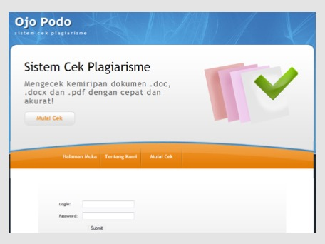
OJOPODO/ANOA(Authentic and Original Archive)
AB. Raharjo et al
ASP .NET SQL Server -
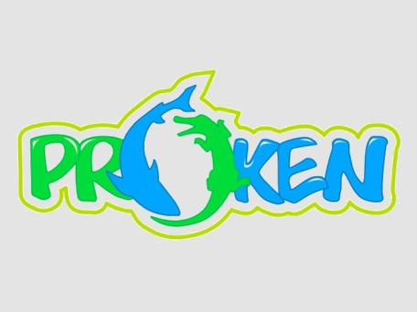
The Winner of ITB Fair Sociopreneur Competition 2012 & The semifinalist of Danone Young Social Entrepeneurship
AB. Raharjo, Y. Eftiana, I. Yunidiawati
Sociopreneur
Contact Me
-
LIS - UMR CNRS 7020 (bureau 25),
Faculte des Sciences,
Aix-Marseille University -
Av. Escadrille Normandie-Niemen
13397 Marseille cedex 20, France